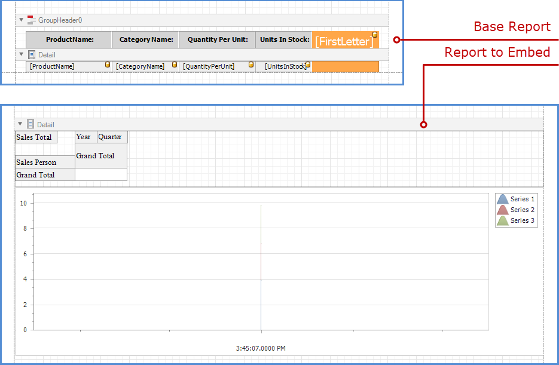
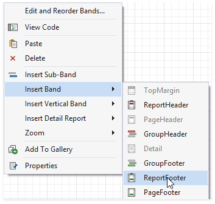
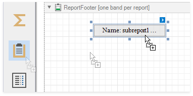
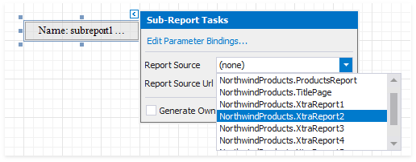
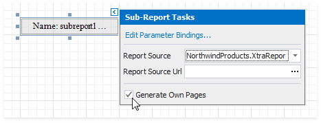
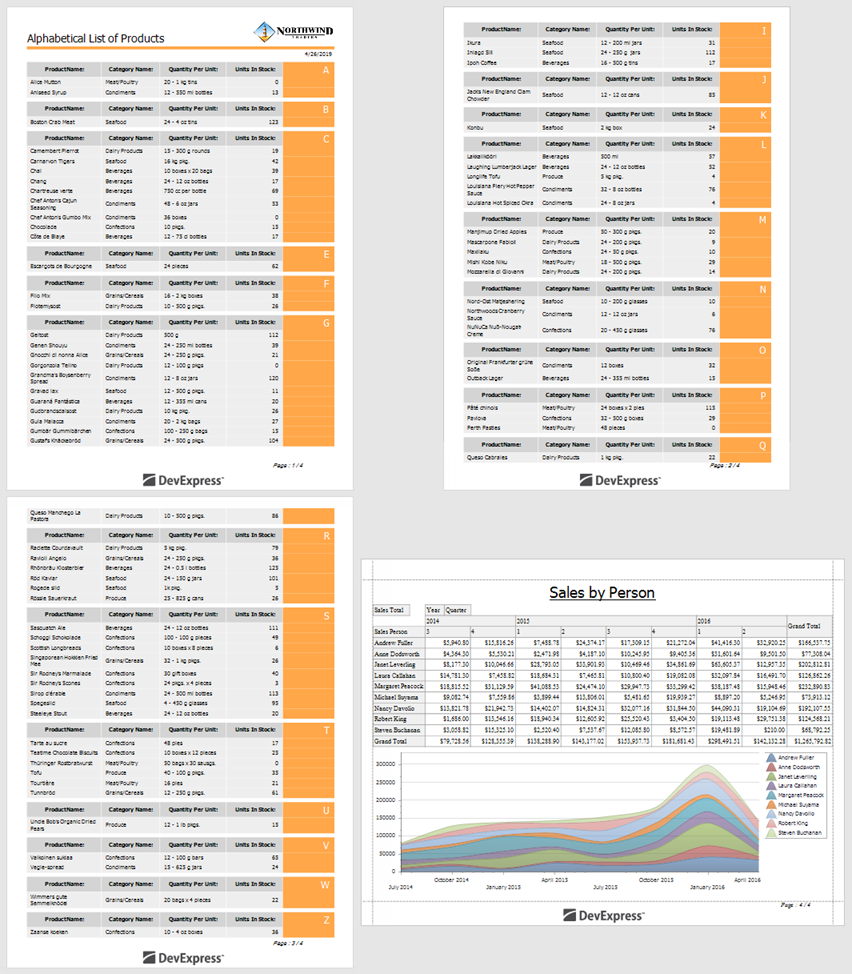

Add a Report to the End/Beginning
Follow the steps below to add a separate report to the end of another report and print it as a single job.

Right-click the base report and select the Insert Band / Report Footer item in the context menu.

Drag a Subreport item from the Toolbox onto the created Report Footer band.

Tip
To add a report to the beginning of another report (for instance, to add a title page), use the Report Header band instead.
Click the subreport's smart tag and specify a report in the Sub-Report Tasks window:
- Use the Report Source property to assign a predefined report from the Designer.
Use the Report Source Url property to assign a custom report.

Enable the Generate Own Pages option to print the embedded report on separate pages and use its own page settings.

Switch to Preview mode to see the combined report.
